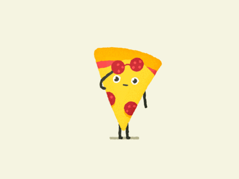

NEJVÌTŠÍ PIZZA NA SVÌTÌ

Italùm se po dvaadvaceti letech vrátil svìtový rekord s nejvìtší pizzou svìta. Dosavadní rekord s nejvìtším slaným italským koláèem svìta vytvoøili v roce 1990 Jihoafrièané. Tým italských kuchaøù ale chtìl rekord v nejvìtším národním pokrmu vrátit do své vlasti a vytvoøil pizzu margherita mající v prùmìru 39,6 metru.
Rekord z Jihoafrické republiky mìl 37 metrù v prùmìru. Na výrobu toho italského bylo potøeba devìt tun mouky, ètyøi tuny rajèatové omáèky, devìt tun mozarelly, 250 kilogramù soli, 190 kilogramù olivového oleje a tøiadvacet kilogramù balzamikového octa. Kuchaøi museli pizzu upéct v 5 234 dávkách a trvalo jim to 48 hodin.
Pizza byla pøitom peèena pøi rùzných teplotách v rozmezí 300 až 500 stupòù Celsia. Kuchaøi jí dali jméno Ottavia po prvním øímském císaøi Octavianovi.
„Pojmenovali jsme tu pizzu Ottavia, aby symbolizovala nadìji, že se naše ekonomika a kultura oživí. Chtìli jsme, aby byla symbolem štìstí pro zotavení našich zemí,“ uvedl po vytvoøení rekordu za pìtici kuchaøù její šéf Dovilio Nardi.
Created by: Nikola Dvoøáková